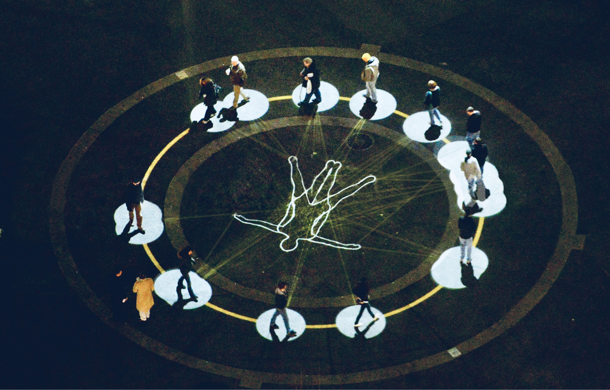

In Rembrandt's Anatomy Lesson, everyone is looking at the body on the table. We assume the body is the subject. It is not.
The subject is the looking itself — the faces above the cadaver, quickened by attention into something more alive than the thing they attend. For fifteen years, KMA set out to place something at the centre of a public square that holds a crowd, and then to reveal that the crowd was the work all along.
A collaborative practice of Kit Monkman and Tom Wexler, 2005–2020. The work is finished. This is its record.
Read what it was ↓
It was never a sequence of light shows. It was a single, fifteen-year argument about where a work of art is located, and who makes it.
The orthodox answer is that the work is the object, the artist makes it, and the audience receives it. KMA proposed something else: that the work might be the transaction — the contract between a maker who admits the artifice and an audience that agrees to complete it — and that the most interesting art might be the kind that withholds half of itself and trusts you to supply the rest. In an age that had learned to sell people their own attention, the work made the opposite wager: that strangers, given a frame and a little permission, would conjoin their imaginations and make something none of them could make alone.
The arc ran from the crowd to the single viewer; from a figure at the centre of a public square to its complete disappearance. It began in Trafalgar Square before we knew what we were testing, and ended in a near-empty cathedral with one person, one screen, and an act of imagination. What follows is the record of that arc — the works, why they mattered, and what others made of them.